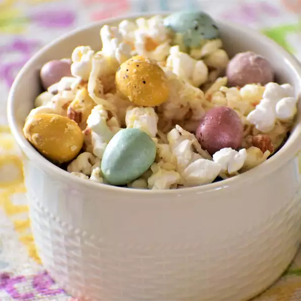

Easter Popcorn
Description
This popcorn is an easy and festive way to enjoy some leftover Easter candy! You can use any kind of candy, nuts, or "mix-ins" that you like! And make sure to adjust the salt at the end, it really helps to balance out the sweetness! Make sure to store this in a cool, dry, and airtight container, or the popcorn will become soft. It should be eaten within a few days of being made.
Ingredients
- 7 cups plain popped popcorn, unsalted
- 1 cup mini chocolate candy-coated eggs (such as Cadbury®)
- 1 cup sweetened flaked coconut
- ½ cup chopped almonds
- 1 (8 ounce) package white chocolate chips (such as Ghirardelli®)
- 1 tablespoon unsalted butter
- ⅛ teaspoon almond extract (Optional)
- ¼ teaspoon salt, or to taste
Instructions
- Line a baking sheet with parchment paper. Set aside.
- Place popcorn, chocolate eggs, coconut, and almonds together in a large bowl. Toss to combine. Instructions from https://www.allrecipes.com/recipe/273004/easter-popcorn/
- Pour white chocolate chips into a small microwave-safe bowl. Microwave until chocolate is melted, stirring every 30 seconds, about 2 minutes. Stir in butter and almond extract until fully melted and incorporated.
- Pour melted chocolate mixture over popcorn mixture and toss to thoroughly coat. Sprinkle in salt; stir. Pour mixture onto the prepared baking sheet. Adjust salt to taste.
- Let popcorn cool and harden before serving.